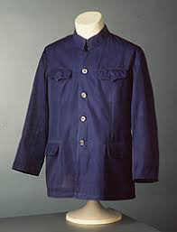

2.1 Mass marketing and market segmentation
Segmentation and Positioning
Introduction:
This chapter will discuss the nature of market segmentation and the related strategies that are open to the fashion marketer. Having determined the target market or markets, the next consid- eration is the positioning of the fashion marketing organization and its marketing efforts towards the target, and this will be covered later. The chapter also forms an important link with the rest of the book by introducing the concept of the marketing mix. Having shown how an organization can position itself within a market, the next task is the planning and organization of controllable variables to meet the requirements of the market profitably. The particular combination of marketing variables offered to specific markets is known as the mar- keting mix, and this is described shortly.
Mass Marketing and Market Segmentation:
What is a market? To constitute a market a number of conditions have to be met. There should be a genuine need, the customer(s) should be willing and able to buy the product, and the aggregate demand should be sufficient to enable a supplier to operate profitably
Mass Marketing:
Fashion marketers who assume that all customers in the market are the same are adopting a mass marketing or undifferentiated marketing approach. The assumption is based on the idea that customer needs do not vary and that the company can offer a standardized marketing mix that meets the needs of everyone. The standard marketing mix means the same product, method of distribution, prices and promotional effort aimed at everyone. The best example of this is China during the cultural revolution of the 1960s where the whole nation was offered the Mao outfit of dark blue jacket and trousers
When considering the development of markets, it was noted that the aristocracy and wealthy classes were able to obtain products that met their precise needs. Most people in the pre-industrial revolution period dressed in a variety of styles which were greatly influenced by local skills and raw materials. Mass production methods, coupled with the experience of producing clothing for large armies, led to the possibility of mass markets for clothing. Indeed the practice of mass marketing linked to the military can be illustrated by the existence of the ‘demob’ suit issued to servicemen upon demobilization from national service.
Where a product can be standardized, perhaps because of the pre- dominance of function over style, then it could be argued that a mass market exists. Also, when mass production methods enable consider- able economies of scale, some items may be produced so efficiently that the product becomes a low-priced commodity. Certain items of underwear such as white Y-Fronts or one-size tights are certainly capable of consideration as products suitable for mass marketing. The reality, however, is that although the possibility of mass market- ing of clothing remains, it has never been a major feature of fashion markets in any advanced economy.
Given choice and the diversity of suppliers, consumers have amply demonstrated the desire for individuality that clothing can give them and they have rendered elusive the idea of a mass market for clothing. This is not to argue that homogeneity is absent in the clothing market or that there is not just one mass market, but many different clothing markets. One of the big success stories of the last decade has been Zara who have targeted younger customers with fast fashion as com-petitive prices.
Recognizing that the existence of many markets reflects the needs and purchasing capacity of clothing buyers leads to the idea of seg- menting markets. Markets may be segmented or divided where, for instance, a group of consumers has a set of homogeneous needs that is different to other groups